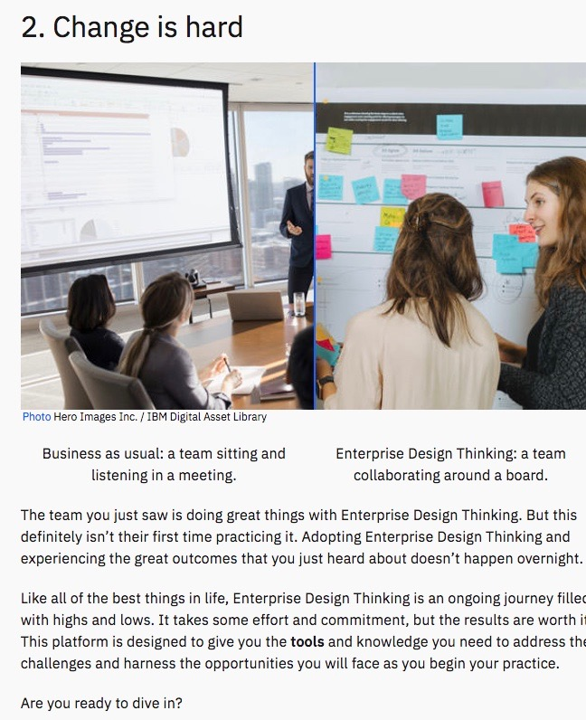
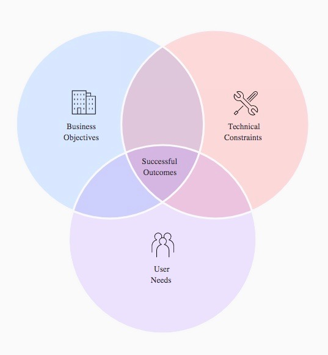

"I think it is" ...Let's find out!
Is Agile development and IBM Design Thinking the same thing you ask?
By Jason Nutt, an agile MERN developer
Ok! Here is a direct comparison as from conception until the current age...
AGILE BEGINNINGS
The four core values of Agile software development as stated by the Agile Manifesto are:
individuals and interactions over processes and tools;
working software
over comprehensive documentation;
customer collaboration
over contract negotiation;
and.
responding to change
over following a plan.
IBM Design Thinking is a scalable framework to help teams understand and deliver—continuously.
You begin by making a conscious commitment, as a team, to prioritize your users over other,
sometimes competing, business concerns.
In order to move fast, you put in place a well-rounded, multi-disciplined team.
Well so far, the comparison draws many similarities. The overall theme being customer's (user's happiness) satisfaction is of primary importance, and then relationships between teammates, then tools and processes.
Link of comparison to Business as Usual

Here is the pdf of the introduction summary that I have just completed on IBM Design Thinking
Complexity and ambiguity
Enterprise teams deal with complex ecosystems that take years to learn and master.
They offer countless rabbit holes, worm holes, plot holes, pot holes, and any other kind of ambiguous situations you can think of.
Finding enough clarity to decide on the best thing to do within this intricate web can sometimes seem impossible.
But, it doesn’t have to be so hard.
Finding clarity can be as simple as focusing on the most important thing.
In design thinking, the most important thing is people.
In Enterprise Design Thinking, we call this a focus on user outcomes.
A focus on user outcomes
When you focus your team and your work around your users and their needs, you’re able to more easily decide what’s important.
This makes your offerings more essential to the people who use them. If all you did was ask:
Who are our users?
What is their current experience?
How could it be improved?
over and over again, you would get closer and closer to understanding your users and creating an ideal future for them.
This allows you to put a more valuable offering into your client’s hands and into the market.
Business problems to human-centered problems
Business problems, like those you are asked to solve day to day, are often focused on something nonhuman, like the bottom line or brand recognition.
In order to start focusing on your users, you have to identify the user problems that underlie the business problem.

Uncover the problem
Always be asking why
Focusing on users and their problems can help make it more straightforward.
The 5 Whys activity digs deeper into a problem, or uncovers the intent behind an idea. Let’s find the root cause of the original problem facing Windsor Airlines.